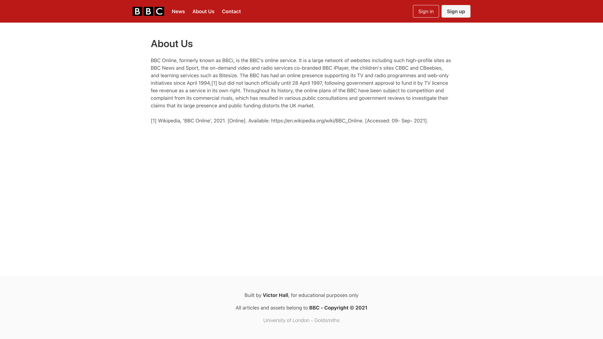
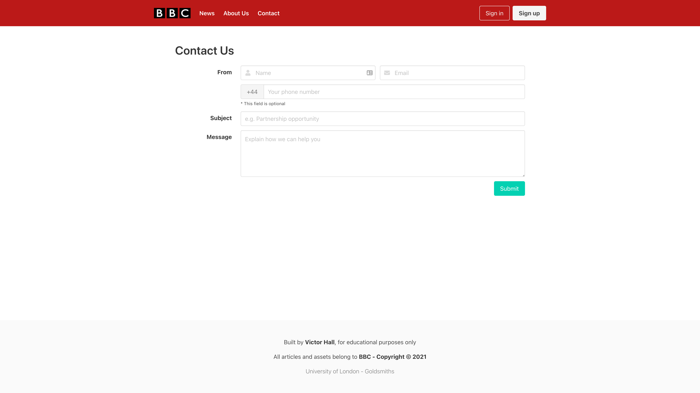
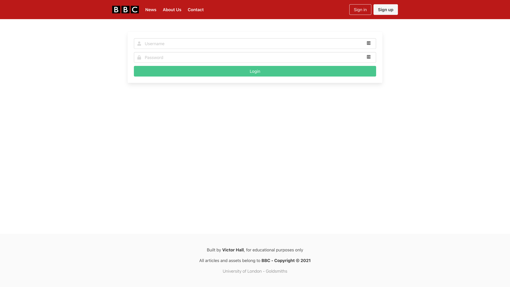
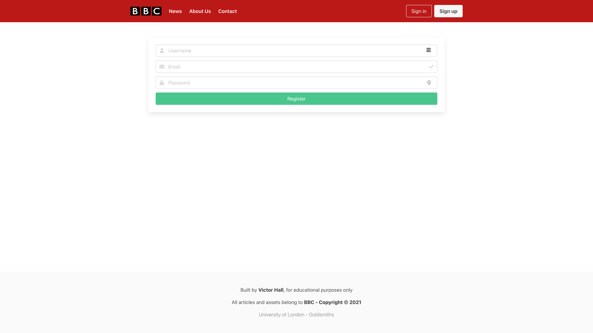
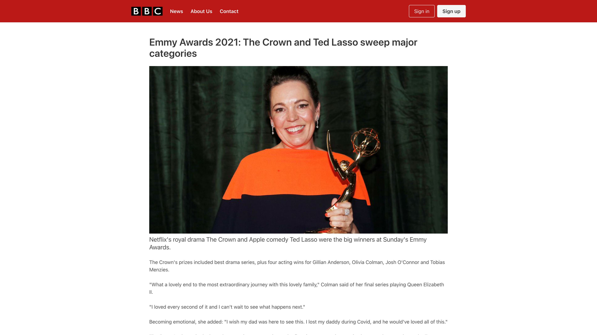

Report: Large Coursework
Victor Hall
Introduction:
This is a simplified version of BBC's website. This was created with the
intent to create a simpler and easier to digest version of the original
newsletter.
This was built using a basic HTML/CSS/JavaScript combo, without any sort
of JavaScript-based HTML templating. The only "big" external resource was
Bulma CSS, with the intent to avoid writing much redundant CSS.
State 3 things that have inspired you when creating your website.
The obvious inspiration for this project was BBC's website, which although
is a bit more complex, I tried to stick to some basic principles used on
the original website. Another great inspiration came from YCombinator's,
Hacker News (https://news.ycombinator.com/), which is a pretty simple, but
effective and easy-to-use, website.
I have also been playing around with creating my blog, which seemed to
overlap a little bit with what I was creating for this project, so I took
a small amount of inspiration from that personal project.
State 3 ways in which your site is accessible.
The website was built using a semantic HTML approach, which makes use of
the many HTML tags available. By following that approach, you make it
easier for screen readers to understand the page, since you are using the
appropriate tags for each bit of the page, rather than only using generic
divs, spans, etc...
The website has also been built using Bulma CSS, which makes it easier to
make all pages responsible, which means the design of the website should
work on most devices since it's built to adapt to the screen size.
Most HTML tags used also had a few attributes indicated by the WACG (Web
Content Accessibility Guidelines), which is the default standard for
accessibility on the web, which follows the same principles discussed
above, when using a semantic HTML design.
State 3 things you had to learn/find out by yourself when creating your
site, and describe how you did that
I'm not very good with Bulma, so I mostly had to do a lot of research
about how it worked, and what were the available CSS helpers that I had in
hand. I also needed to do some research on how to do some basic form
validation using vanilla JavaScript.
What aspect(s) of your work do you think worked well and why?
The website design and CSS were pretty simple to build since those were
built mostly around the Bulma CSS framework, which provides many helper
CSS classes, to avoid repeating CSS code, and even avoid writing much CSS
code at all.
What aspect(s) of your work could be improved, and how might you do
things differently another time?
I would probably start by using some sort of templating tool, to avoid
re-writing the same code over and over again, every time a new page is
created. I would probably use something like React.js.
I would also try to implement a system to fetch the markdown for the
required article, and build it dynamically with JavaScript on the
client-side, rather than building an individual HTML page for each
article.
What resources were used when creating your work?
This website was heavily built using the Bulma CSS framework, which
provides many CSS helpers, and better default styling (when compared to
browser defaults). This made it much easier to build each page of this
project since there wasn't a need to create much individual CSS for each
page/element.
I also used the Font Awesome icon pack, since it's a pretty
straightforward and easy to use pack, that is free and good looking.
Screenshots:
About us

Contact us

Login

Register

Article
